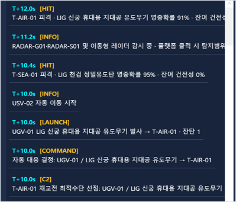
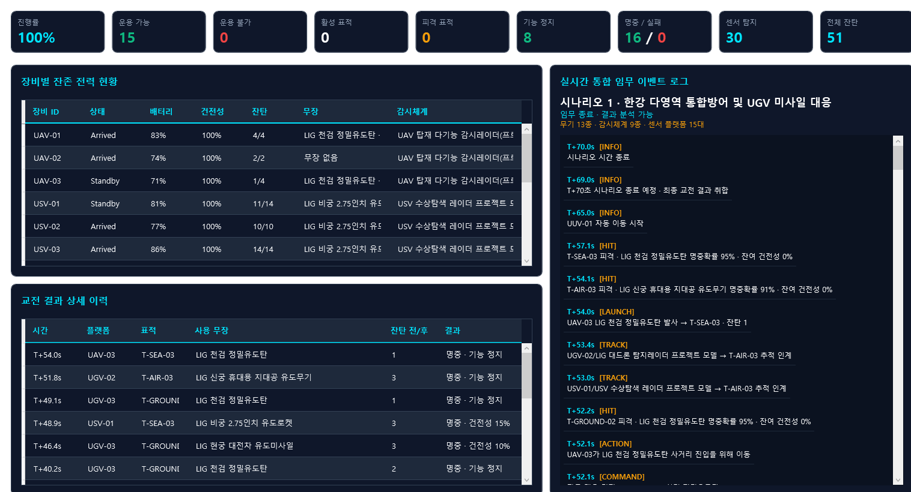
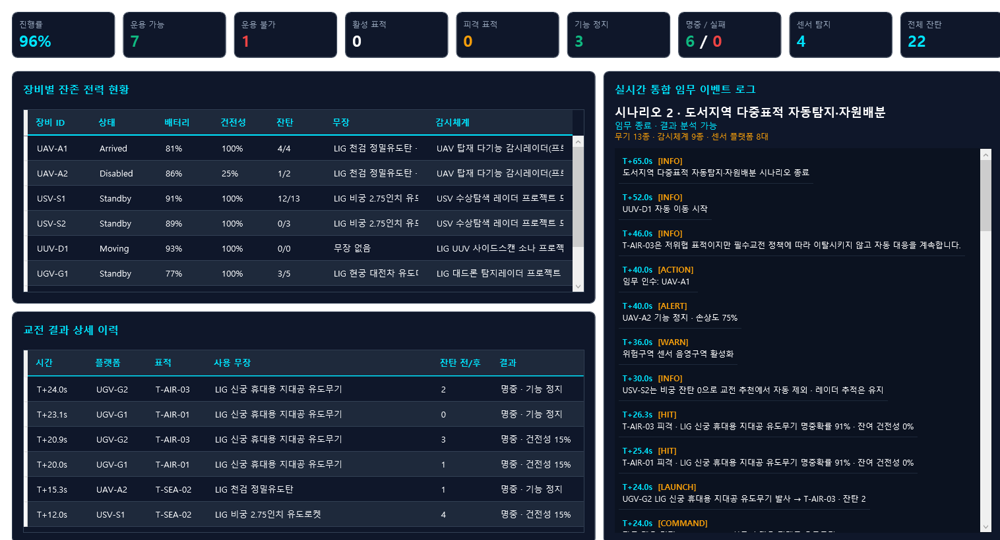
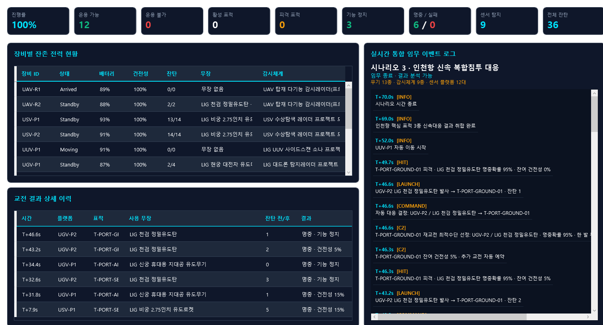

SYSTEM SOFTWARE, COMMAND AND CONTROL
MOSAIC C2 다영역 무인체계 지휘통제 시뮬레이터
공중, 수상, 수중과 지상 무인체계의 탐지, 대응수단 추천, 기동, 교전과 재교전을 하나의 WPF 시뮬레이터로 통합했습니다. 외부 JSON 시나리오와 실행 로직을 분리하고 통신 상태와 가용 자산에 따라 판단을 다시 수행하도록 구성했습니다.
3 SCENARIOS운용자 개입 없이
자동 실행
자동 실행
- 기간
- 2026.07, 1주
- 맥락
- The SSEN 과정 미니 프로젝트
- 역할
- 4인 팀, 팀장
- 기술
- C#, WPF, MVVM, JSON

01 / SYSTEM
시스템 구조와 담당 범위
외부 JSON으로 자산, 센서, 무장과 시나리오를 정의하고, 시뮬레이션 엔진이 시간에 따라 상태를 갱신합니다. 탐지 결과가 들어오면 가용 플랫폼과 무장을 평가해 명령을 만들고, 발사체 비행과 명중 판정까지 이어지도록 구현했습니다.
- 시뮬레이션 엔진시간 진행, 자산 이동, 탐지, 교전과 피해 상태 갱신
- 대응수단 추천영역, 사거리, 잔탄, 통신 상태와 위협도 조건 평가
- 데이터 분리무장, 센서, 플랫폼과 시나리오를 외부 JSON으로 관리
- 운용 화면지도, 선택 자산 제원, 교전 요약과 이벤트 로그 동기화
02 / WPF EVIDENCE
자동 대응 실행 증빙

첫 명중 후에도 표적이 남으면 재교전
수상 표적 T-SEA-01의 탐지부터 무력화까지 엔진이 수행한 순서입니다.
- 표적 탐지UAV-02의 레이더가 수상 표적을 탐지
- 자동 명령과 발사USV-01을 선정하고 비궁 유도로켓 발사
- 첫 명중표적 건전성 15%가 남아 추가 교전 예약
- 대응수단 재선정가용 수단을 다시 평가해 UAV-03의 천검 정밀유도탄 선정
- 표적 무력화재교전 명중 후 잔여 건전성 0%
03 / SIMULATION
원본 시뮬레이터 실행
한강 수로의 USV와 UUV, 도로의 UGV, 공중 UAV가 영역별 경로를 따라 기동합니다. 레이더 탐지 후 자동 명령, 발사체 비행, 명중과 재교전을 확인할 수 있으며, 영상 마지막에는 해당 실행의 결과 분석 화면이 이어집니다.
04 / MODELING
무기와 센서 제원을 실행 변수로
LIG 계열 유도무기와 감시체계의 공개 제원을 학습하고, 사거리, 명중확률, 잔탄과 대응 가능 영역을 JSON 속성으로 구성했습니다. 레이더 탐지범위는 시나리오 규모에 맞춘 근사값으로 설정해 지도 표시와 추천 판단이 같은 데이터를 사용하도록 했습니다.
05 / DECISION
상태가 바뀌면 판단을 다시 수행
통신 계층 분리
플랫폼 통신은 추천 판단에 반영하고 지휘통신 링크는 명령 보류와 재전송 조건으로 처리했습니다.
재교전 재평가
이전 플랫폼에 고정하지 않고 잔존 표적의 건전성과 모든 가용 수단을 다시 평가했습니다.
영역 제약 기동
UAV는 직선, USV와 UUV는 수로, UGV는 도로 경로망을 따라 이동하도록 분리했습니다.
실행 전 검증
ID 고유성, 참조 정합성, 좌표 범위, 경로망 영역과 화면 구조를 먼저 검사했습니다.
06 / RESULT
검증 결과
3개
탐지부터 임무 종료까지 자동 실행
동일한 원본 코드와 시나리오 JSON으로 실행하고 종료 시점의 표적, 교전과 잔존 전력을 확인했습니다.
| 시나리오 | 종료 시간 | 탐지 경보 | 명중 / 실패 | 무력화 표적 | 활성 표적 |
|---|---|---|---|---|---|
| 한강 통합방어 | 70 s | 30건 | 16 / 0건 | 8개 | 0개 |
| 도서지역 다중표적 | 65 s | 4건 | 6 / 0건 | 3개 | 0개 |
| 인천항 복합침투 | 70 s | 9건 | 6 / 0건 | 3개 | 0개 |
탐지 경보는 센서별 탐지 기록 수로, 고유 표적 수와 다릅니다. 명중 건수에는 잔존 건전성을 제거하기 위한 재교전이 포함됩니다. 수치는 시나리오에 설정된 명중 및 재교전 조건에서의 실행 결과입니다.
01 한강 통합방어, 결과 분석 화면

02 도서지역 다중표적, 결과 분석 화면

03 인천항 복합침투, 결과 분석 화면
